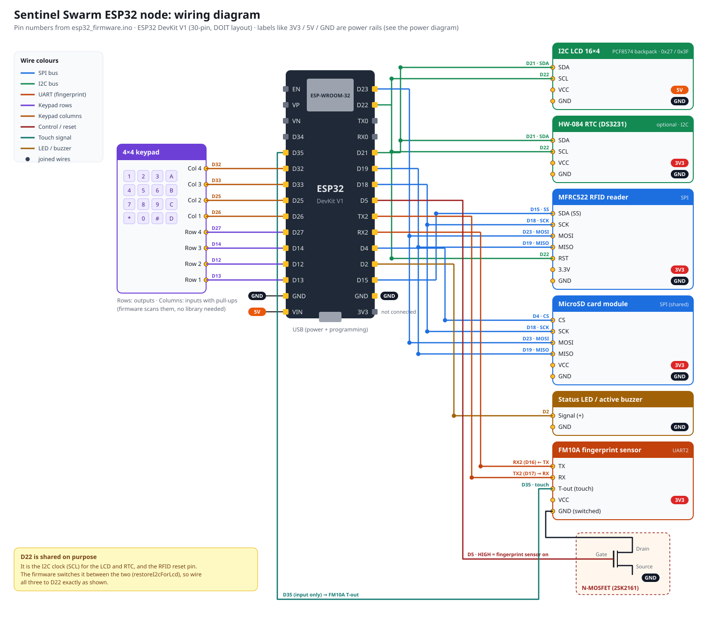
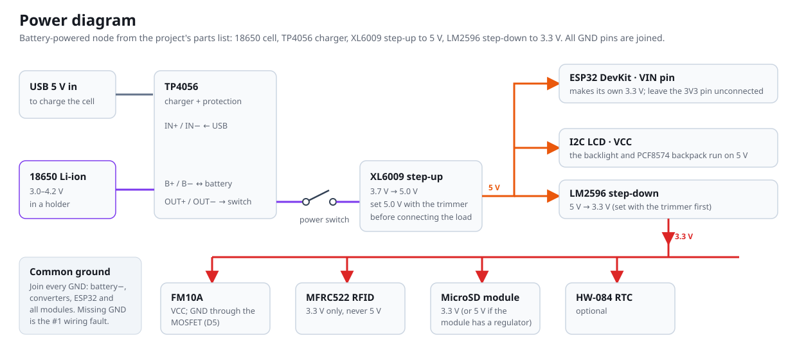
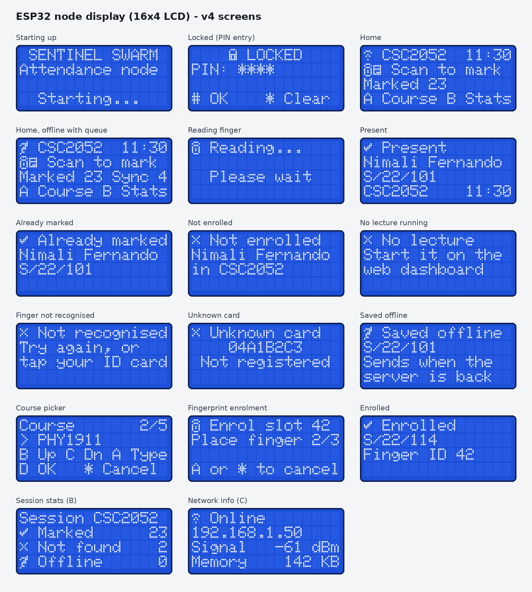

Step 1Parts list
One node. The modules marked optional can be left out; switch them off in the firmware's feature flags.
| Qty | Part | Used for |
|---|---|---|
| 1 | ESP32 DevKit V1 (ESP-WROOM-32, 30-pin) | The brain: Wi-Fi, web server, OTA commands |
| 1 | FM10A optical fingerprint sensor (with touch output) | Fingerprint attendance and enrolment |
| 1 | MFRC522 RFID-RC522 reader + cards or tags | Student ID card attendance |
| 1 | 16×4 character LCD with I2C backpack (PCF8574) | Status, student name, menus |
| 1 | 4×4 membrane keypad | PIN, course picker, menus |
| 1 | MicroSD card module (SPI) + microSD card (FAT32) | config.txt, fingerprint template backups, logs |
| 1 | N-channel MOSFET (we used 2SK2161) + 220 Ω and 10 kΩ resistors | Switching the fingerprint sensor's power |
| 1 | Status LED or active buzzer | Scan feedback on D2 |
| 1 | 18650 Li-ion cell + holder | Battery power |
| 1 | TP4056 charger module (with protection) | Charging the cell from USB |
| 1 | XL6009 step-up converter | Battery → 5 V |
| 1 | LM2596 step-down converter | 5 V → 3.3 V for the modules |
| 1 | Slide switch, perfboard or custom PCB, headers, jumper wires, enclosure | Putting it together |
| opt. | HW-084 / DS3231 RTC module | Keeps time when offline (the firmware falls back to the ESP32 clock) |
Tools: soldering iron, multimeter (needed to set the converters), USB cable, a PC with the Arduino IDE.
Step 2Wiring diagram
Click to enlarge. Coloured tags such as 3V3, 5V and GND mean "connect to that power rail" (see the power diagram).


restoreI2cForLcd()), so connect LCD SCL, RTC SCL and RFID RST all to D22.Step 3Pin table
Copied from the pin map in the firmware. If you change a pin, change it in esp32_firmware.ino too.
| Module | Module pin | ESP32 | Notes |
|---|---|---|---|
| FM10A fingerprint | TX | D16 (RX2) | UART2, baud auto-detected (57600 first) |
| RX | D17 (TX2) | ||
| T-out (touch) | D35 | Goes HIGH when a finger touches. D35 is input-only | |
| VCC | 3.3 V | ||
| GND | MOSFET drain | Gate ← D5 (HIGH = sensor on), source → GND | |
| MFRC522 RFID | SDA (SS) | D15 | SPI chip-select |
| SCK | D18 | shared with SD | |
| MOSI | D23 | shared with SD | |
| MISO | D19 | shared with SD | |
| RST | D22 | shared with I2C SCL (see note) | |
| 3.3V / GND | 3.3 V / GND | 3.3 V only | |
| IRQ | — | not used | |
| MicroSD | CS | D4 | |
| SCK / MOSI / MISO | D18 / D23 / D19 | shared with RFID | |
| VCC / GND | 3.3 V / GND | use 5 V only if your module has a regulator | |
| I2C LCD 16×4 | SDA / SCL | D21 / D22 | address found automatically (0x27, 0x3F, …) |
| VCC / GND | 5 V / GND | ||
| HW-084 RTC (optional) | SDA / SCL | D21 / D22 | DS3231, shares I2C with the LCD |
| VCC / GND | 3.3 V / GND | ||
| 4×4 keypad | Row 1–4 | D13, D12, D14, D27 | outputs |
| Col 1–4 | D26, D25, D33, D32 | inputs with internal pull-ups | |
| LED / buzzer | Signal | D2 | same pin as the on-board blue LED |
Step 4Power
The node runs from one 18650 cell. The XL6009 makes 5 V for the ESP32 and the LCD; the LM2596 makes 3.3 V for the sensors.


Don't connect the ESP32's own 3V3 pin to the LM2596 rail: the board already makes its own 3.3 V from VIN, and two regulators fighting each other is a common fault. Join all grounds.
For bench testing you can skip the battery and power everything from the ESP32's USB port, taking 3.3 V from the board's 3V3 pin. Use that only while testing; the fingerprint sensor and RFID reader together can draw more than the board's regulator likes.
Step 5Assemble and test, one part at a time
The repository has a small test sketch for each part in esp32_firmware/. Add one module, run its test, and only then add the next. When something fails, you know exactly which wires to check.
Power and ESP32
Set the converters (see Power). Fit the ESP32 on headers so it can be removed. Plug in USB, open the Serial Monitor at 115200 baud and upload any example sketch to check the board and driver.
LCD
Wire SDA → D21, SCL → D22, VCC → 5 V, GND. Upload
test_display/test_display.ino.Text appears on all four lines. If the screen is blank or shows blocks, turn the contrast trimmer on the backpack.
Keypad
Rows to D13, D12, D14, D27 and columns to D26, D25, D33, D32. Upload
keypad_test/keypad_test.ino.Every key prints the right character in the Serial Monitor.
MicroSD card
Format the card as FAT32. Wire CS → D4 and the SPI lines to D18, D19, D23. Upload
Test_sd/Test_sd.ino.The sketch mounts the card and writes and reads a file.
RFID reader
Add SDA → D15 and RST → D22 (the SPI lines are already there). 3.3 V only. Upload
Test_frid/Test_frid.ino.The reader's firmware version prints, and tapping a card prints its UID.
RTC (optional)
SDA → D21, SCL → D22, 3.3 V. Upload
test_clock/test_clock.ino.The date and time tick on the LCD every second.
Fingerprint sensor and MOSFET
Wire the MOSFET: gate to D5 through 220 Ω, a 10 kΩ resistor from gate to GND, source to GND, drain to the FM10A's GND wire. Then FM10A TX → D16, RX → D17, T-out → D35, VCC → 3.3 V.
The firmware turns the sensor on with D5 and power-cycles it if it ever hangs, so this step is worth doing even on the bench.
LED or buzzer
Signal → D2, GND. It blinks or beeps on every scan.
Step 6Flash the firmware
Install the ESP32 boards
In the Arduino IDE open Boards Manager, install esp32 by Espressif Systems, then choose Tools → Board → ESP32 Dev Module.
Install the libraries
From Library Manager:
Library Needed for Adafruit Fingerprint Sensor Library USE_FINGERPRINTMFRC522 (by GithubCommunity / miguelbalboa) USE_RFIDLiquidCrystal I2C USE_LCDRTClib (by Adafruit) USE_HW084WiFi, WebServer, HTTPClient, Preferences, SD, SPI, Wire and LittleFS come with the ESP32 boards. The keypad is scanned by the firmware itself, so no keypad library is needed.
Choose your hardware
At the top of
esp32_firmware.ino, comment out any module you did not fit:#define USE_FINGERPRINT // FM10A fingerprint sensor #define USE_RFID // MFRC522 RFID reader #define USE_LCD // I2C LCD #define USE_HW084 // HW-084 / DS3231 RTC (optional) #define USE_KEYPAD // 4x4 keypadUpload
Open
esp32_firmware/esp32_firmware.ino, select the COM port and click Upload. If the upload stalls at "Connecting…", hold the board's BOOT button until it starts.
Step 7Configure
The node reads config.txt from the root of the SD card on every boot. Values there override what is saved in the ESP32's memory.
# Sentinel Swarm — ESP32 Configuration (config.txt on the SD card)
DEVICE_NAME=ESP32-Lab1
WIFI_SSID=your-wifi-name
WIFI_PASS=your-wifi-password
SERVER_URL=http://192.168.1.10/csc2052
# or: SERVER_IP=192.168.1.10
STATIC_DNS=8.8.8.8
HARDWARE_KEY=same-value-as-SS_HARDWARE_API_KEY-on-the-server
SECRET_KEY=same-value-as-SS_HEARTBEAT_SECRET-on-the-server| Key | What to put |
|---|---|
DEVICE_NAME | A unique name; this is how the node appears in the dashboard |
WIFI_SSID / WIFI_PASS | Your Wi-Fi (a normal password network; the firmware connects with SSID and password only) |
SERVER_URL | Address of the PHP server. The firmware keeps only the host part and always calls http://<host>/csc2052/api/…, so install the server in a folder named csc2052 |
HARDWARE_KEY | Sent with every request. Must match SS_HARDWARE_API_KEY on the server, or scans and heartbeats are rejected |
SECRET_KEY | Read from the file but not used by the current firmware; set it to the server's SS_HEARTBEAT_SECRET for future use |
config.txt with your real Wi-Fi password or keys to a public repository. Also change the keypad's default system PIN (123) from the dashboard before deploying.Step 8First run
Boot
Insert the SD card and power on. The LCD shows the boot steps; the Serial Monitor (115200) prints a status block with SSID, server, sensors and the offline queue.
Check the dashboard
Within about 10 seconds the node sends its first heartbeat and appears on the Hardware Nodes page as online. From there you can send commands, sync courses and change settings.
Enrol a student
Press E in the Serial Monitor (or start enrol mode from the dashboard) and place the same finger twice. Press I to link an RFID card. Then link the fingerprint slot to the student in the dashboard.
Take attendance
Start a lecture from the dashboard, or press A on the keypad and pick the course with B/C, confirming with D. Scans appear in the live log; if Wi-Fi drops, they queue on the node and sync later.
What the display shows
Every screen uses the same four rows: a title or status bar, the message, a detail line, and the keys you can press. The home screen shows the course, the time, the connection, how many students are marked and how many scans are waiting to sync. After a scan the student's name and number appear with the result, and the display returns home after 3 seconds. On the keypad, A picks the course, B shows session counts and C shows network details.

Serial Monitor commands
| Key | Action |
|---|---|
| E | Enrol a fingerprint |
| I | Enrol an RFID card |
| D | Delete a fingerprint slot |
| C | Change the course |
| A | Start attendance |
| T | Today's session totals |
| S | Diagnostics |
| Key | Action |
|---|---|
| Y | Sync the offline queue now |
| O | Show the offline queue |
| K | Clear the offline queue |
| F | Back up fingerprints to the server |
| G | Restore fingerprints from the server |
| X | Wipe all fingerprints on the sensor |
| R | Reboot |
Step 9Troubleshooting
| Problem | Check |
|---|---|
| LCD backlight on, no text | Turn the contrast trimmer. Check SDA = D21 and SCL = D22. The firmware tries addresses 0x27, 0x3F, 0x3E, 0x23, 0x21, 0x25, 0x26 and 0x20 and prints which one it found. |
| Bottom two LCD rows start four characters to the right | Some 16×4 modules address rows 3 and 4 differently. Add LCD_LAYOUT=1604 to config.txt on the SD card. |
| "Sketch too big" when uploading | The firmware uses about 96% of the default 1.3 MB app space. In Arduino IDE choose Tools → Partition Scheme → Huge APP (3MB No OTA/1MB SPIFFS); the node's commands do not need firmware OTA. Changing the scheme clears the node's internal storage, so sync the offline queue first. Or turn off a feature you don't use with its USE_ line (for example USE_HW084). |
| Fingerprint sensor not found | TX and RX are crossed on purpose: sensor TX → D16, sensor RX → D17. Check the MOSFET: with D5 HIGH the sensor's light should come on. The firmware tries 57600, 9600, 19200, 115200, 4800 and 38400 baud. |
| Finger not detected until pressed hard | Check the T-out wire to D35. |
| SD card fails to mount | FAT32 format, CS on D4, and the module on the right supply (3.3 V unless it has its own regulator). |
| RFID version reads 0x00 or 0xFF | SS on D15, RST on D22, and 3.3 V (5 V damages the reader). Keep the SPI wires short. |
| Random keypad presses | A row or column wire is loose or touching another. The firmware ignores a scan when a column is LOW with no row selected. |
| Node never shows online | The server must be reachable from the node's Wi-Fi at http://<host>/csc2052/, and HARDWARE_KEY must match the server. |
| Resets when the sensor or Wi-Fi switches on | Supply too weak. Recheck the XL6009 output under load and the battery charge. |
More detail: ARCHITECTURE.md, section 7: ESP32 Firmware.